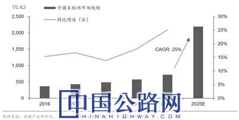

微官网
微官网
2020-12-23 经济参考报 作者：记者 王璐 实习记者 庞昕熠

中国车联网市场情况及预测
十九大提出到2035年基本实现社会主义现代化、到本世纪中叶建成社会主义现代化强国的宏伟目标，十九届五中全会提出“加快建设交通强国”，中国的交通运输迎来更加宝贵的“黄金时期”。这是12月22日发布的《中国交通的可持续发展》白皮书（下称“白皮书”）对于中国交通的未来展望。
“智慧”是关键词之一。白皮书指出，以智慧交通建设推进数字经济、共享型经济产业发展，推动模式、业态、产品、服务等联动创新，提高综合交通运输网络效率，构筑新型交通生态系统。业内人士指出，未来智慧交通应用场景将进一步增多，相关建设将掀起更大热潮，车联网等相关产业链机遇倍增。
智慧交通发展步伐加快
进入新时代，中国交通驶入高质量发展的快车道，基础设施建设日新月异，运输服务能力、品质和效率大幅提升，科技支撑更加有力，人民出行更加便捷，货物运输更加高效，中国正在从交通大国向交通强国迈进。
“智慧交通发展步伐加快。”白皮书指出，推进“互联网+”交通发展，推动现代信息技术与交通运输管理和服务全面融合，提升交通运输服务水平。充分运用5G通信、大数据、人工智能等新兴技术，交通运输基础设施和装备领域智能化不断取得突破。出台自动驾驶道路测试管理规范和封闭测试场地建设指南，颁布智能船舶规范，建立无人船海上测试场，推动无人机在快递等领域示范应用。
数据显示，截至2019年底，229个机场和主要航空公司实现“无纸化”出行，全国ETC客户累计超过2亿。北斗系统在交通运输全领域广泛应用，全国已有760万道路营运车辆、3.33万邮政快递干线车辆、1369艘部系统公务船舶、10863座水上助导航设施、109座沿海地基增强站、352架通用航空器应用北斗系统，并在3架运输航空器上应用北斗系统，京张高铁成为世界首条采用北斗卫星导航系统并实现自动驾驶等功能的智能高铁。智慧公路应用逐步深入，智慧港口、智能航运等技术广泛应用。智能投递设施遍布全国主要城市，自动化分拣覆盖主要快递企业骨干分拨中心。
“到2035年，基本建成交通强国”“智能、平安、绿色、共享交通发展水平明显提高”……围绕这些目标，智慧交通建设将进一步提速。
交通运输部副部长刘小明表示，下一步将促进技术创新赋能，积极推动人工智能、5G、区块链以及新能源、新材料技术在交通运输领域的应用，支持运输产业模式、产品和服务的创新发展。
产业链多环节迎新机遇
据东方财富Choice数据显示，今年6月以来，无人驾驶概念板块累计涨幅超20%，车联网概念板块累计涨幅超10%。
这背后是业内对产业链未来前景的看好。北京交通大学中国交通运输经济研究中心主任欧国立认为，智慧交通市场庞大，城市轨道交通、高速铁路、高速公路、城市道路交通、航海、航空等都有广泛的应用前景。未来，汽车制造业、汽车服务业、交通运营服务、互联网、信息服务、智能交通等行业的跨界融合发展是大势所趋。
今年以来，作为智慧交通建设的重点之一，智能网联汽车（智能汽车、自动驾驶、车路协同）相关政策推动不断，行业加速发展确定性强。据《智能网联汽车技术路线图2.0》显示，到2025年，预计我国PA（部分自动驾驶）、CA（有条件自动驾驶）级智能网联汽车销量占当年汽车总销量比例超过50%，C-V2X（以蜂窝通信为基础的移动车联网）终端新车装配率达50%；到2030年，L2-L3级的智能网联汽车销量占比超过70%，L4级车辆在高速公路广泛应用，在部分城市道路规模化应用；到2035年，各类网联汽车式高速自动驾驶车辆广泛运行。
华创证券预测，今明两年将有多家车企相继实现L3、L4级别的智能驾驶量产，L3、L4级别渗透率有望在2025年达到10%和2%，2030年进一步攀升至18%和9%。
天风证券研报指出，在科技赋能下，汽车电动智能化或成大趋势，ADAS、智能座舱、新能源热管理、轻量化等领域迎国产化机遇。电动智能化浪潮中，国内车企、造车新势力、互联网企业和通信企业相互合作，中国有望凭借广阔的市场以及先进的技术实现弯道超车，引领电动智能化。
据中国电子信息产业发展研究院和前瞻产业研究院数据测算，2016年至2019年我国车联网产业年均复合增长率为16.14%，2019年我国车联网的规模达574亿元。中国车联网市场在2020-2025年将以25%的年复合增长率增长，到2025年中国车联网市场空间将达2190亿元。
与此同时，在交通强国和新基建政策加持下，智慧高速、智慧港口等建设将掀起更大热潮。据不完全统计，截至11月30日，交通运输部已公开34家交通强国试点单位中23家的工作方案。其中智慧高速项目明显增多，应用更加丰富，基础设施数字化比例增加，对应的信息化投入显著增加。
申港证券认为，新一轮交通信息化建设浪潮已然开启，以交通强国和新基建为代表的政策组合将推动行业迅速发展，高速信息化行业景气度高企，有望持续向好，龙头受益更加明显。